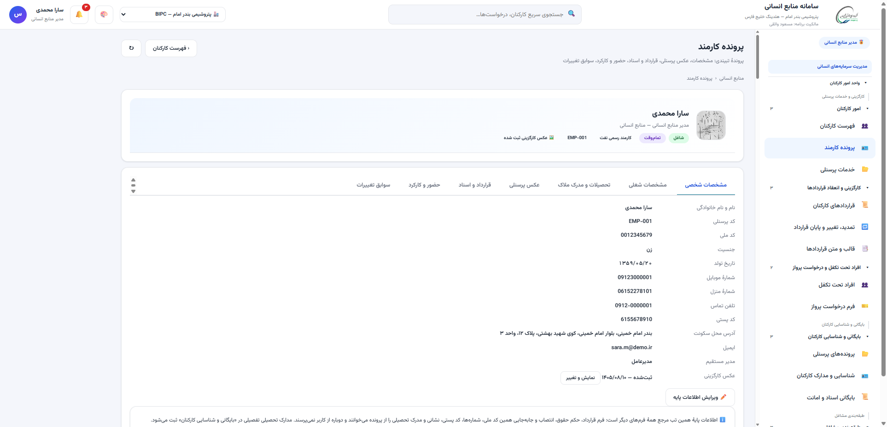
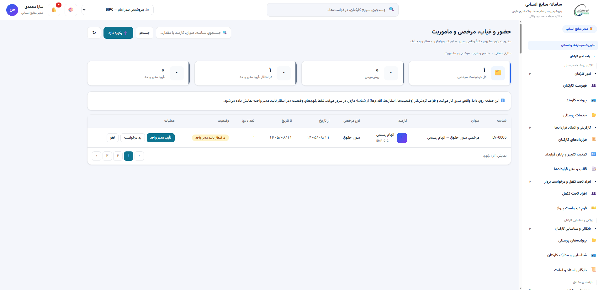
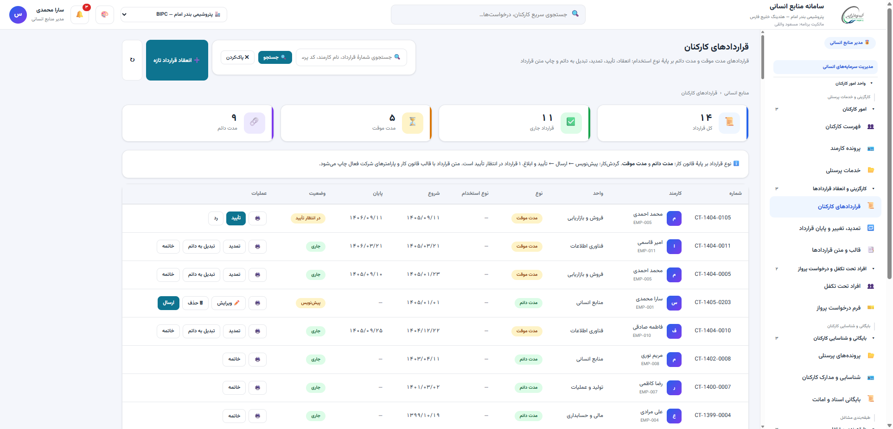
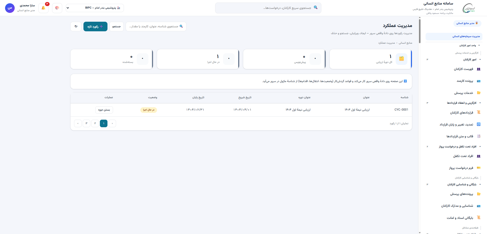
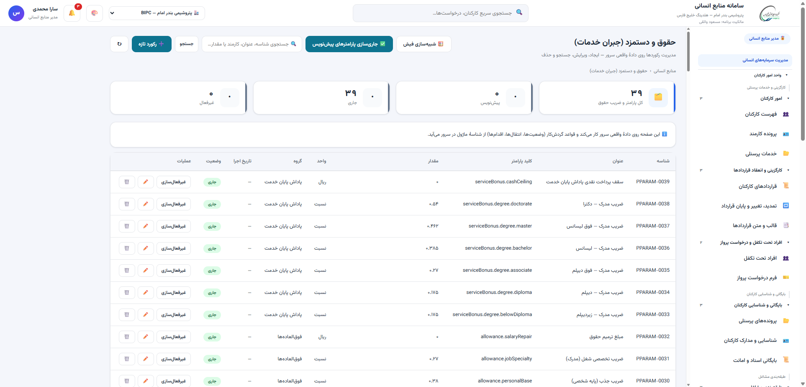
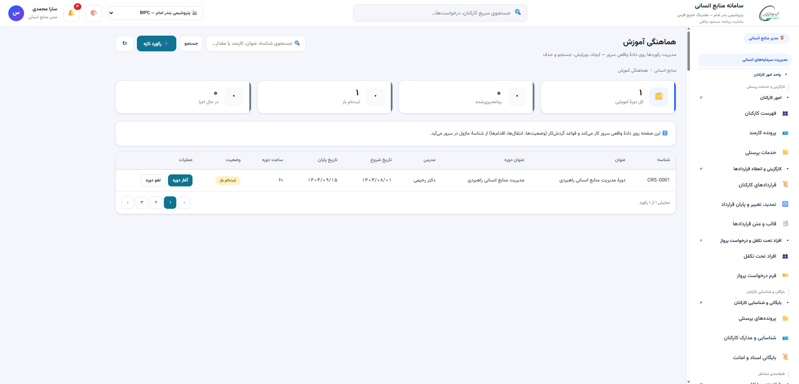

سامانه را ببینید، وارد شوید و خودتان امتحان کنید
تصاویر این صفحه، نماگرفت واقعی از همان سامانهٔ در حال اجرا هستند؛ نه طرح گرافیکی و نه ماکت. اگر سرور روی همین رایانه بالا باشد، با دکمهٔ زیر همان محیط باز میشود و میتوانید فرآیندها را روی دادهٔ آزمایشی انجام دهید. اگر سرور بالا نباشد، همین تصاویر کل مسیر کار را نشان میدهند.
start-HRMS.bat در پوشهٔ پروژه راه میافتد (یا با اجرای
server\bin\hrmsd.exe -addr 127.0.0.1:8099 -org bandar_imam -web ..\design\prototype -root . -env .env)
و سپس نشانی http://127.0.0.1:8099/ در دسترس است.
پنج نقش، پنج نگاه متفاوت به یک سامانه
برای درک درست سامانه، بهتر است با بیش از یک نقش وارد شوید: منو، داشبورد و محدودهٔ دادهٔ هر نقش متفاوت است و همین تفاوت، تفاوت یک سامانه با «چند فرم» است.
مدیر منابع انسانی
همهٔ ماژولهای کارکنان، حقوق، رفاه و گزارشها؛ تأیید مرخصی، پردازش حقوق، فایلهای قانونی و تنظیمات سازمانی.
کارشناس منابع انسانی
کارگزینی روزمره: پرونده، قرارداد، کارکرد، ورود فایل دستگاه تردد و ثبت رکوردها — بدون پردازش حقوق.
مدیر واحد
فقط واحد خودش: تأیید مرخصی زیردستان، درخواست رفاهی و مشاهدهٔ کارکنان واحد.
کارمند
پروندهٔ خودش، درخواست مرخصی، فیش حقوقی، کارتهای خدماتی و درخواستهای شخصی.
در ده دقیقه، قابلیتهای کلیدی را امتحان کنید
درخواست مرخصی ثبت کنید و ببینید کارتابل و منوی محدود این نقش چه تفاوتی دارد.
همان درخواست را در «تأیید مرخصی» ببینید: تأیید کنید و اثر آن را روی ماندهٔ مرخصی بسنجید.
پروندهٔ یک کارمند را باز کنید: تبهای پرونده، عکس کارگزینی، قرارداد و اسناد، حضور و کارکرد و سوابق تغییرات.
از صفحهٔ «ثبت تردد» فایل نمونهٔ دستگاه تردد را بارگذاری کنید؛ خطوط ناقص و تکراری در گزارش مغایرت میآیند و تردد تازه نمیسازند.
در «پردازش حقوق» دوره را محاسبه کنید؛ سپس «تطبیق کارکرد با حقوق» را ببینید که کارکرد واقعی را با مبلغ نوشتهشده میسنجد.
فیش یک کارمند را باز کنید: شاکلهٔ مزد مبنا و فوقالعادههای اقلیمی با منبع هر مقدار. سپس لیست بیمه، لیست مالیات و فایل پرداخت بانکی را بسازید.
متصدی هر پست، عکس کارگزینی و نتیجهٔ احراز شرایط؛ یک انتصاب با نتیجهٔ «احرازنشده» را امتحان کنید تا پیام قاعدهٔ دامنه را ببینید.
از انتخابگر شرکت در نوار بالا، شرکت دیگری را فعال کنید؛ منو و ماژولها بر پایهٔ همان استقرار بازسازی میشوند.
نماگرفتهای واقعی از صفحههای کلیدی
روی هر تصویر کلیک کنید تا بزرگ شود.















برای مدیریت و ارزیاب
- مسیر پیشنهادی آزمایش، قابلیتهای کلیدی را در ده دقیقه پوشش میدهد.
- هر فرآیند، قاعدهٔ خودش را در دامنه دارد؛ پیامهای خطا فارسی و دقیقاند.
- گزارشها و فایلهای قانونی از همان یک محاسبه ساخته میشوند، نه از محاسبهٔ دوباره.
- پارامترها و استقرار شرکتها، داده است؛ تغییر آنها انتشار نسخهٔ تازه لازم ندارد.
برای کارشناس فناوری اطلاعات
- معماری سهلایه: هستهٔ قواعد، سرور مرجع، رابط فقطنمایشی.
- یک مانیفست برای هر ماژول؛ مشتقات (منو، دسترسی، انواع، مستندات) خودکار ساخته میشوند.
- خروجیها UTF-8؛ داده با تاریخ شمسی و ارقام لاتین، نمایش با ارقام فارسی.
- پشتیبانگیری با بستهٔ نسخهدار و راستیآزمایی بازگردانی سطربهسطر.